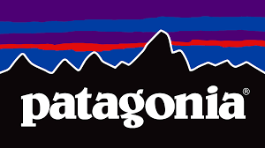
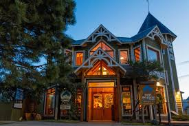
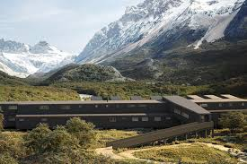
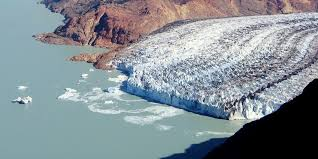
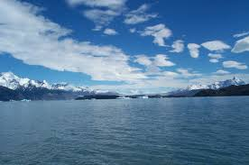

PatagoniaExplora - Agencia de Viajes

SOBRE NOSOTROS
"PatagoniaExplora" es una agencia de viajes dedicada a ofrecer experiencias inolvidables en la Patagonia Argentina. Nuestro objetivo es conectar a los viajeros con la majestuosidad de sus paisajes naturales, desde glaciares hasta montañas y lagos cristalinos.
HOTELES
CALAFATE
Hotel Los Glaciares (★★★★☆) - Vistas impresionantes y desayuno

CHALTEN
Patagonia Lodge (★★★★☆) - Ideal para senderistas y amantes de la naturaleza.

BARILOCHE
Hotel Lago Azul (★★★★★) - Lujo con vista al lago Nahuel.

Destinos Disponibles
Aventura en El Chaltén: 5 días de trekking y exploración por $1,000 USD.

Glaciares de El Calafate: 4 días con navegación por los glaciares por $800 USD.

Ruta de los Siete Lagos: 6 días recorriendo Bariloche, Villa La Angostura y San Martín de los Andes por $1,200 USD.
 Tabla de Aventuras
Tabla de Aventuras
| Destino |
Duración |
Actividades |
Precio |
| Aventura en El Chaltén |
5 días |
Trekking y exploración |
$1,000 USD |
| Glaciares de El Calafate |
4 días |
Navegación por glaciares |
$800 USD |
| Ruta de los Siete Lagos |
6 días |
Recorrido por Bariloche, Villa La Angostura y San Martín de los Andes |
$1,200 USD |
| Todos los paquetes incluyen alojamiento y guía especializado. |
Oferas Destacadas
Glaciares: Perito Moreno, Upsala, Viedma.

Glaciar Viedma
Montañas y Trekking: Fitz Roy, Cerro Torre, Nahuel Huapi.

Montaña Fitz Roy
Lagos y Bosques: Lago Argentino, Lago Nahuel Huapi, Bosque de Arrayanes.

Lago Argentino
¿Por que elegirnos?
Explorar la Patagonia es una experiencia única, y nosotros estamos aquí para hacerla inolvidable. En Aventura Austral, no solo organizamos viajes: creamos recuerdos que duran toda la vida.
Ventajas de viajar con nosotros:
-Expertos locales: Conocemos cada rincón de la Patagonia como la palma de nuestra mano.
-Viajes a medida: Diseñamos itinerarios personalizados según tus intereses y ritmo.
-Guías certificados: Profesionales apasionados por la naturaleza, la cultura y el servicio.
-Atención 24/7: Estamos disponibles para vos en cada etapa del viaje.
-Compromiso con la naturaleza: Operamos con prácticas sustentables que cuidan el entorno patagónico.
-Alojamientos con encanto: Elegimos lugares auténticos y acogedores, con vistas que te van a dejar sin aliento.
Lo que dicen nuestros viajeros:
“Nunca imaginé que la Patagonia podía ser tan mágica. Gracias a Aventura Austral por hacer realidad el viaje de mis sueños.”
— Carla G., Buenos Aires.
“Desde el primer contacto hasta el último día del viaje, todo fue perfecto. Atención cálida, profesionalismo y paisajes increíbles.”
— Martín L., Rosario.
“Recomiendo 100%. La organización, los guías, las excursiones... todo superó mis expectativas.”
— Laura M., Madrid.
Informacion de contacto
Pie de Pagina
COPYRIGHT@nahirbarros